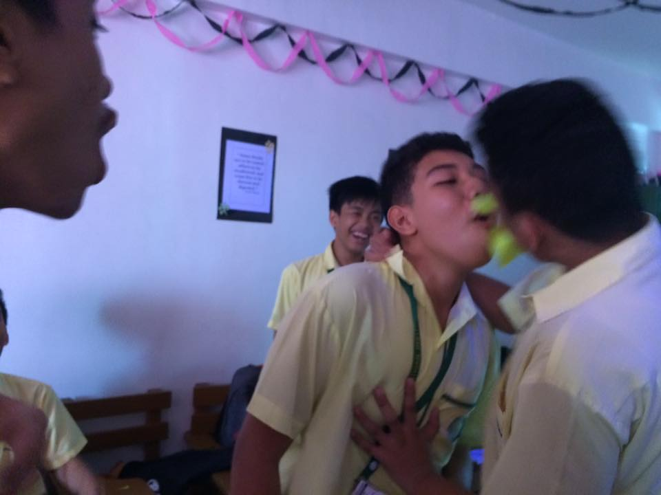
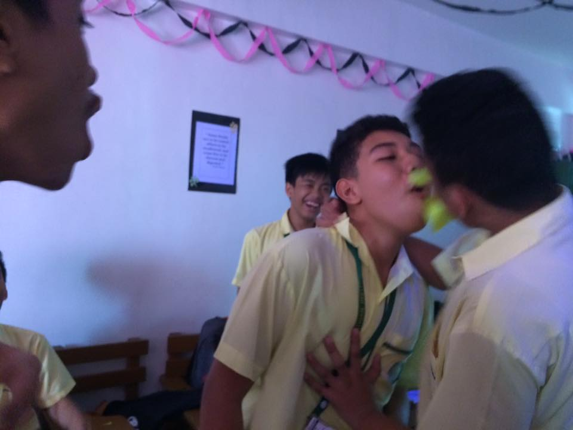

1. Shantal is a sweet person in our class. She always cares about us no matter what the problem is. She is diligent in the things that she does,
and can be a scary person if she changes her mood sometimes. But we know that all of us love her from the bottom of our hearts because she is a person
that we can rely on and will always listen to us anytime of the day.
2. richmond is the funny person in our class. At first he is very shy to speak and very rarely to talk to somebody.
But once we know him, he is the cheerful person that we know. He always brings a smile in our face whenever he is around.
He is mostly the reason why our bond and relationship bloom. He can be a serious sometimes and when doing a task or schoolwork.
3. Natasha is a lovely person. She is the most charming of our class. Boys always flock together when she is around. She is always
nominated to participate in beauty pageant event in our campus unwillingly but she mostly wins. Aside on her looks, she has also a loving personality
which is why countless man court her but she always reject.
4. Kyrie is a typical happy-go-lucky student in the class. She's the kind of pupil who doesn't stress too much learning and understanding the concepts
all day yet, she manages to accomplish all the tasks given excellently on time. In simple words, I can say that Name is the kind of classmate that
everyone would love to be friends with. She can be considered as someone you can be with when stressing out on schoolworks as well as reviewing last
minute on the quizzes and exams while at the same time, she is also someone you can be with eating outside and having fun after class. She is smart but
not intimidating.
5. Josep is the musical nerd of the class. He collects different kinds of band shirt and goes to their concert with different kind of people. He can
speak with different people and jam with them. In almost no time he befriends everyone in the class because of how he can manage and create a
conversation with people. He can be annoying sometimes but everyone accepts you for what you are and know that you are a great person.
6. Kaiz is very good in drawing during our college days. When there is an art events
She always gets nominated to participate. There are times that she wins, and there are times that she loses.
But the name that we know don’t know how to give up and she keep striving more for her own.
7. Vanna is the straight A person. All of her projects, activities, assignments and quizzes are always receive perfect remark. Even though she
is very knowledgeable person, she always shares what she learns from the topic and always organizes group studies. Because of her we passed our
college with flying colors. Even though she is intimidating at first, you will learn how she values friendships and camaraderie.
8. Razon is adaptable and observant in the class. Of course he's also active, capable and faithful, but in smaller doses and they're often
spoiled by habits of being cynical as well. His adaptability though, this is what he's most well-liked for. There are many times when friends count on this
and his courage whenever they need help. Nobody's perfect of course and name has plenty of rainy days too. His desperation and amoral nature tend to get in
the way, both personally and for others. Fortunately his observant nature helps prevent most of these grievances.
9. Andrea is a well-organized and timely person. Of course, she's also generous, efficient, and modest, but these qualities are less prominent, and
they're frequently associated with shallowness.
Her clear-headedness, on the other hand, is what she's known for. In times of need, people often rely on this and her intuition.
Of course, no one is flawless, and name has her fair share of flaws. Her envy and impatience aren't ideal, and they're beyond what most people can handle.
Fortunately, her punctuality is generally around to assist in the repair of broken items.
10.It's easy to get to know someone as open as Micky, but the two characteristics that most people admire the most are his freethinking and brashness. Of course,
he's also resourceful, adaptive, and companionable, but to a lesser extent and frequently combined with deception.
His freethinking character, on the other hand, is something he's admired for. When people need to be cheered up, they can rely on him and his kind character.
11. Kerby is a very skinny person when we met him. When he talks, everyone surprisingly seemed paying attention in what joke he will going to say. He is a funny person.
Even though he is not a bright person in school, He can ace many activities and performance task that involves with acting and speech. Whatever group he may end
with, somehow they will always get the highest score. We love him for the wackiness and the happy atmosphere that he brings to the room.
12. Lance is a very gentle person. But he always love to play basket. Even though basketball is a sport of body contact, he rarely clash with anyone because he is always
trying to shoot from three point line. At the class he is very timid person but we always know that he is capable because he is a strong person.
13. Luigi is very shy when he got transferred to our school. But little do we know that he is a very smart person and also a chess champion. Whenever we challenge him to a
duel in chess, we cannot win to him. He toppled many opponents in the region to become the champion in chess. His dreams is to become a Grandmaster at the end of his life.
14. Manaba is a cute boy in our classroom. He is very friendly and very kind person. He is gentle to everyone and sometimes getting along with others to their silly things.
He also love to it a lot that is why he is a very cute person with a chubby appearance that you want to pinch whenever you have a chance.
15. Rea is a very tall person who looks like model. But for her she doesn’t want to become a model, she wants to become clothing designer. Every time we approach her,
he is doing many sketches of sample clothing that she draws. While we are overwhelmed that she can draw a stylish clothes, we are also having talking to her about
her dreams that she wants to achieve.
16. Franchesca is a sweet and very strong person you will ever encounter. She is very calm in handling a problematic situation. Everyone look up to her because she
can endure unbearable pain than even we cannot handle. Even though she is strong, she can be vulnerable and experience emotional breakdown because she is also a
person. She also is a very giving friend. She give some of her foods to us saying that she cannot finish. Aside from that, she is very easy to work with.
17. Isaiah is difficult to explain since he is such a fascinating individual, but the most important things to know about him are that he is poised and caring. Of
course, he's reasonable, thrilling, and dynamic as well, but they're significantly less obvious when contrasted to horrific urges. His sense of equilibrium, on
the other hand, is what makes him so popular. When friends are sad, they rely on this and his resourcefulness on a regular basis. No one is perfect, and Caleb
has his own dark side to deal with. His petty and silly natures risk destroying nice emotions and having a bad effect on everyone. Fortunately, his kindness is
always there to brighten people's emotions.
18. Angelica is a free-thinking and precise person. Of course, she's also a positive, compassionate, and trustworthy person, but in a sense, they're not very
distinctive, and she's also characterized by her rough behavior. But she is often praised for her free-thinking nature. Friends tend to rely on them and
their enthusiasm when they need support or help. Of course, no one is perfect, and so Angelica. Her pitiful personality and coldness are not the best
companions and can ruin many nights. Fortunately, their accuracy usually mitigates the worst.

 
